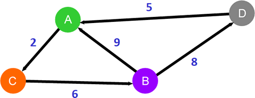

首页 > 编程笔记
最短路径算法
在给定的图存储结构中，从某一顶点到另一个顶点所经过的多条边称为路径。

图 1 图存储结构
例如在图 1 所示的图结构中，从顶点 A 到 B 的路径有多条，包括 A-B、A-C-B 和 A-D-B。当我们给图中的每条边赋予相应的权值后，就可以从众多路径中找出总权值最小的一条，这条路径就称为最短路径。

图 2 无向带权图
以图 2 为例，从顶点 A 到 B 的路径有 3 条，它们各自的总权值是：
最短路径不仅适用于无向加权图，也适用于有向加权图，如下图所示：
和图 2 相比，图 3 中的每条边都标有方向，以权值为 2 的边为例，它只表示从顶点 A 到 C 的一条边，而从顶点 C 是无法直达 A 的。从顶点 A 到 B 的路径仅有 1 条，就是 A->C->B，因此它自然也就是从 A 到 B 的最短路径。
常用的查找最短路径的算法有 4 种，下表给出了它们各自的名称和特点。
图 1 图存储结构
例如在图 1 所示的图结构中，从顶点 A 到 B 的路径有多条，包括 A-B、A-C-B 和 A-D-B。当我们给图中的每条边赋予相应的权值后，就可以从众多路径中找出总权值最小的一条，这条路径就称为最短路径。
图 2 无向带权图
以图 2 为例，从顶点 A 到 B 的路径有 3 条，它们各自的总权值是：
A-B：9
A-C-B：2+6=8
A-D-B：5+8=13
最短路径不仅适用于无向加权图，也适用于有向加权图，如下图所示：

图 3 有向加权图
图 3 有向加权图
和图 2 相比，图 3 中的每条边都标有方向，以权值为 2 的边为例，它只表示从顶点 A 到 C 的一条边，而从顶点 C 是无法直达 A 的。从顶点 A 到 B 的路径仅有 1 条，就是 A->C->B，因此它自然也就是从 A 到 B 的最短路径。
最短路径算法
实际生产和生活中，经常需要查找最短路径，例如借助高德、腾讯地图等导航工具查找到目的地的最短可行路线，建立道路交通网、物流运输网络、计算机网络等，这时就可以使用最短路径算法。常用的查找最短路径的算法有 4 种，下表给出了它们各自的名称和特点。
| 最短路径算法 | 描 述 |
|---|---|
| 迪杰斯特拉算法（Dijkstra） | 寻找某个特定顶点到其它所有顶点的最短路径，该算法要求所有路径的权值为非负数。 |
| 弗洛伊德算法（Floyd-Warshall） | 寻找各个顶点之间的最短路径，允许非环路的路径权值为负数，该算法不仅适用于稀疏图，在稠密图（路径数量多的图）中寻找最短路径的效率也很高。 |
| 贝尔曼福特算法（Bellman-Ford） |
寻找某个特定顶点到其它所有顶点的最短路径，该算法允许路径的权值为负数。 推荐阅读：
|
| 约翰逊算法（Johnson） |
寻找各个顶点之间的最短路径，允许非环路的路径权值为负数，该算法更适用于稀疏图（路径数量少的图）。 推荐阅读：
|
关注公众号「站长严长生」，在手机上阅读所有教程，随时随地都能学习。内含一款搜索神器，免费下载全网书籍和视频。

微信扫码关注公众号